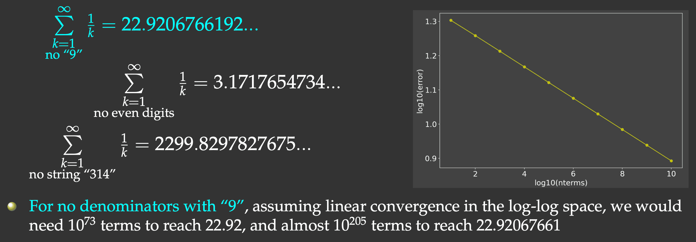
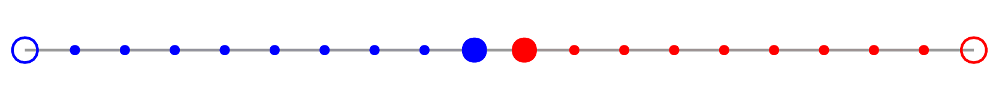

Running parallel Ray workflows
… across multiple cluster nodes
Abstract
Ray is a unified framework for scaling AI and general Python workflows. Outside of machine learning (ML), its core distributed runtime and data libraries can be used for writing parallel applications that launch multiple processes, both on the same node and across multiple cluster nodes. These processes can subsequently execute a variety of workloads, e.g. Numba-compiled functions, NumPy array calculations, and even GPU-enabled codes.
In this webinar, we will focus on scaling Ray workflows to multiple HPC cluster nodes to speed up various (non-ML) numerical workflows. We will look at both a loosely coupled (embarrassingly parallel) problem with a slowly converging series (the harmonic series with some terms taken out) and a tightly coupled parallel problem.
Installation
On my computer, with pyenv installed earlier:
pyenv install 3.12.7
unlink ~/.pyenv/versions/hpc-env
pyenv virtualenv 3.12.7 hpc-env # goes into ~/.pyenv/versions/<version>/envs/hpc-env
pyenv activate hpc-env
pip install numpy numba
pip install --upgrade "ray[default]"
pip install --upgrade "ray[data]"
...
pyenv deactivateOn a production HPC cluster:
module load python/3.12.4 arrow/18.1.0 scipy-stack/2024b netcdf/4.9.2
virtualenv --no-download pythonhpc-env
source pythonhpc-env/bin/activate
pip install --no-index --upgrade pip
pip install --no-index numba
avail_wheels "ray"
pip install --no-index ray
...
deactivateTo use it:
module load StdEnv/2023 python/3.12.4 arrow/17.0.0 scipy-stack/2024a netcdf/4.9.2
source /project/def-sponsor00/shared/pythonhpc-env/bin/activateInitializing Ray
import ray
ray.init() # start a Ray cluster and connect to it
# no longer necessary, will run by default when you first use itHowever, ray.init() is very useful for passing options at initialization. For example, Ray is quite verbose when you do things in it. To turn off this logging output to the terminal, you can do
ray.init(configure_logging=False) # hide Ray's copious logging outputYou can run ray.init() only once. If you want to re-run it, first you need to run ray.shutdown(). Alternatively, you can pass the argument ignore_reinit_error=True to the call.
You can specify the number of cores for Ray to use, and you can combine multiple options, e.g.
ray.init(num_cpus=4, configure_logging=False)If not specified, Ray will use all available CPU cores, e.g. on my laptop ray.init() will start 8 ray::IDLE processes (workers), and you can monitor these in a separate shell with htop --filter "ray::IDLE" command (you may want to hide threads – typically thrown in green – with Shift+H).
Ray tasks
In Ray you can execute any Python function asynchronously on separate workers. Such functions are called Ray remote functions, and their asynchronous invocations are called Ray tasks:
import ray
ray.init(configure_logging=False) # optional
@ray.remote # declare that we want to run this function remotely
def square(x):
return x * x
r = square.remote(10) # launch/schedule a remote calculation (non-blocking call)
type(r) # ray._raylet.ObjectRef (object reference)
ray.get(r) # retrieve the result (=100) (blocking call)The calculation may happen any time between <function>.remote() and ray.get() calls, i.e. it does not necessarily start when you launch it. This is called lazy execution: the operation is often executed when you try to access the result.
a = square.remote(10) # launch a remote calculation
ray.cancel(a) # cancel it
ray.get(a) # either error or 100, depending on whether the calculation
# has finished before cancellationYou can launch several Ray tasks at once, to be executed in parallel in the background, and you can retrieve their results either individually or through the list:
r = [square.remote(i) for i in range(4)] # launch four parallel tasks (non-blocking call)
print([ray.get(r[i]) for i in range(4)]) # retrieve the results (multiple blocking calls)
print(ray.get(r)) # more compact way to do the same (single blocking call)Loosely coupled parallel problem
When I teach parallel computing in other languages (Julia, Chapel), the approach is to take a numerical problem and parallelize it using multiple processors, and concentrate on various issues and bottlenecks (variable locks, load balancing, false sharing, messaging overheads, etc.) that lead to less than 100% parallel efficiency. For the numerical problem I usually select something that is very simple to code, yet forces the computer to do brute-force calculation that cannot be easily optimized.
One such problem is a slow series. It is a well-known fact that the harmonic series \(\sum\limits_{k=1}^\infty{1\over k}\) diverges. It turns out that if we omit the terms whose denominators in decimal notation contain any digit or string of digits, it converges, albeit very slowly (Schmelzer & Baillie 2008), e.g.

But this slow convergence is actually good for us: our answer will be bounded by the exact result (22.9206766192…) on the upper side, and we will force the computer to do CPU-intensive work. We will sum all the terms whose denominators do not contain the digit “9”, and evaluate the first \(10^8\) terms.
I implemented and timed this problem running in serial in Julia (356ms) and Chapel (300ms) – both are compiled languages. Here is one possible Python implementation:
from time import time
def slow(n: int):
total = 0
for i in range(1,n+1):
if not "9" in str(i):
total += 1.0 / i
return total
start = time()
total = slow(100_000_000)
end = time()
print("Time in seconds:", round(end-start,3))
print(total)Let’s save this code inside the file slowSeries.py and run it. Depending on the power supplied to my laptop’s CPU (which I find varies quite a bit depending on the environment), I get the average runtime of 6.625 seconds. That’s ~20X slower than in Julia and Chapel!
Note that for other problems you will likely see an even bigger (100-200X) gap between Python and the compiled languages. In other languages looking for a substring in a decimal representation of a number takes a while, and there you will want to code this calculation using integer numbers. If we also do this via integer operations in Python:
def digitsin(num: int):
base = 10
while 9//base > 0: base *= 10
while num > 0:
if num%base == 9: return True
num = num//10
return False
def slow(n: int):
total = 0
for i in range(1,n+1):
if not digitsin(i):
total += 1.0 / i
return totalour code will be ~3-4X slower, so in the native Python code we should use the first version of the code with if not "9" in str(i) – it turns out that in this particular case Python’s high-level substring search is actually quite well optimized!
Speeding up the slow series with Numba
You can speed up this problem with an open-source just-in-time compiler called Numba. It uses LLVM underneath, can parallelize your code for multi-core CPUs and GPUs, and often requires only minor code changes.
I won’t go through all the Numba details – we cover these in our separate HPC Python course. To speed up the slow series with Numba, you have to use the integer-operations version of digitsin(), as Numba is notoriously slow with some high-level Python constructs. Check out this implementation which is almost as fast as with the compiled languages:
from time import time
from numba import jit
@jit(nopython=True)
def combined(k):
base, k0 = 10, k
while 9//base > 0: base *= 10
while k > 0:
if k%base == 9: return 0.0
k = k//10
return 1.0/k0
@jit(nopython=True)
def slow(n):
total = 0
for i in range(1,n+1):
total += combined(i)
return total
start = time()
total = slow(100_000_000)
end = time()
print("Time in seconds:", round(end-start,3))
print(total)It finishes in 0.601 seconds, i.e. ~10X faster than a naive Numba implementation with substring search (not shown here).
Running Numba-compiled functions as Ray tasks
Wouldn’t it be great if we could use Ray to distribute execution of Numba-compiled functions to workers? It turns out we can, but we have to be careful with syntax. We would need to define remote compiled functions, but neither Ray, nor Numba let you combine their decorators (@ray.remote and @numba.jit, respectively) for a single function. You can do this in two steps:
import ray
from numba import jit
ray.init(num_cpus=4, configure_logging=False)
@jit(nopython=True)
def square(x):
return x*x
@ray.remote
def runCompiled():
return square(5)
r = runCompiled.remote()
ray.get(r)Here we “jit” the function on the main process and send it to workers for execution. Alternatively, you can “jit” on workers:
import ray
from numba import jit
ray.init(num_cpus=4, configure_logging=False)
def square(x):
return x*x
@ray.remote
def runCompiled():
compiledSquare = jit(square)
return compiledSquare(5)
r = runCompiled.remote()
ray.get(r)In my tests with more CPU-intensive functions, both versions produce equivalent runtimes.
Here is the combined Numba + Ray remotes code for the slow series (store it as slowSeriesNumbaRayCore.py):
from time import time
import ray
from numba import jit
ray.init(configure_logging=False)
n = 100_000_000
@jit(nopython=True)
def combined(x):
base, x0 = 10, x
while 9//base > 0: base *= 10
while x > 0:
if x%base == 9: return 0.0
x = x//10
return 1.0/x0
@jit(nopython=True)
def slow(interval):
total = 0
for i in range(interval[0],interval[1]+1):
total += combined(i)
return total
@ray.remote
def runCompiled(interval):
return slow(interval)
ncores = 4
size = n//ncores # size of each batch
intervals = [(i*size+1,(i+1)*size) for i in range(ncores)]
if n > intervals[-1][1]: intervals[-1] = (intervals[-1][0], n) # add the remainder (if any)
r = [runCompiled.remote((1,10)) for i in range(ncores)] # expose workers to runCompiled function
total = sum(ray.get(r))
start = time()
r = [runCompiled.remote(intervals[i]) for i in range(ncores)]
total = sum(ray.get(r)) # compute total sum
end = time()
print("Time in seconds:", round(end-start,3))
print(total)Here the averaged (over three runs) times on my laptop:
| ncores | 1 | 2 | 4 | 8 |
| wallclock runtime (sec) | 0.439 | 0.235 | 0.130 | 0.098 |
Using a combination of Numba and Ray tasks on 8 cores, we accelerated the calculation by ~68X.
Running on one cluster node
Let’s run this Numba + Ray remotes code on several CPU cores on one cluster node. We documented this in our wiki https://docs.alliancecan.ca/wiki/Ray – look for the section “Single Node”. It advises you to start a single-node Ray cluster with multiple CPUs via the ray start ... command.
Strictly speaking, you don’t have to do this, as Slurm will ensure that any additional processes spawned to run your Ray tasks will run on the allocated CPUs.
training cluster
cd ~/webinar
module load StdEnv/2023 python/3.12.4 arrow/17.0.0 scipy-stack/2024a netcdf/4.9.2
source /project/def-sponsor00/shared/pythonhpc-env/bin/activate
salloc --time=0:60:0 --mem-per-cpu=3600
>>> ncores = 1
python slowSeriesNumbaRayCore.py # 1.04s
>>> ncores = 4
python slowSeriesNumbaRayCore.py # 1.135s (still running on 1 core)
exit
salloc --time=0:60:0 --ntasks=4 --mem-per-cpu=3600
python slowSeriesNumbaRayCore.py # 0.264s (running on 4 cores)
exitOn this training cluster we have 8 cores per node, so we can attempt to use all of them on a single node:
>>> ncores = 8
salloc --time=0:60:0 --ntasks-per-node=8 --nodes=1 --mem-per-cpu=3600
python slowSeriesNumbaRayCore.py # 0.135 (running on 8 cores)
exitRunning on multiple cluster nodes
Now let’s run the same problem on 2 cluster nodes. We’ll try to distribute these 8 workers across 8 cores across 2 nodes:
>>> ncores = 8
salloc --time=0:60:0 --ntasks-per-node=4 --nodes=2 --mem-per-cpu=3600
python slowSeriesNumbaRayCore.py # 0.292 (not getting 8X speedup)The problem is that Ray cluster ran all 8 workers on 4 cores on the first node. While still inside the same job, let start an interactive Python shell and then type:
import ray
ray.init(num_cpus=8, configure_logging=False)
ray.nodes() # reports a dictionary with node specs
print(len(ray.nodes())) # 1 node
print(ray.cluster_resources().get("CPU")) # 8 CPU "cores"So, we have 1 node in Ray … Ray thinks it has access to 8 CPU cores, but that’s actually the number of workers running on 4 physical CPU cores …
To run properly on 2 cluster nodes, we need to (1) start a single-node Ray cluster and then (2) add workers on other nodes to it outside of Python. This is described in our documentation https://docs.alliancecan.ca/wiki/Ray.
Ray does not play nicely with single-core MPI tasks. Internally, Ray thinks that each MPI rank should be a “Ray node”, inside of which you would utilize multiple CPU cores. We can do this by launching just one MPI rank per cluster node and then specifying --cpus-per-task=4.
Let’s do it:
>>> make sure to go back to the login node!
salloc --time=0:60:0 --nodes=2 --ntasks-per-node=1 --cpus-per-task=4 --mem-per-cpu=3600
export HEAD_NODE=$(hostname) # store head node's address
export RAY_PORT=34567 # choose a port to start Ray on the head node; unique from other users
echo "Starting the Ray head node at $HEAD_NODE"
ray start --head --node-ip-address=$HEAD_NODE --port=$RAY_PORT \
--num-cpus=$SLURM_CPUS_PER_TASK --block &
sleep 10
echo "Starting the Ray worker nodes on all other MPI tasks"
srun launchWorkers.sh &
ray status # should report 2 nodes (their IDs) and 8 coresHere is our code launchWorkers.sh to launch Ray workers on other nodes:
#!/bin/bash
if [[ "$SLURM_PROCID" -ne "0" ]]; then
ray start --address "${HEAD_NODE}:${RAY_PORT}" --num-cpus="${SLURM_CPUS_PER_TASK}" --block
sleep 5
echo "ray worker started!"
fiStart Python and type:
import ray
import os
# connect to our pre-configured Ray cluster
ray.init(address=f"{os.environ['HEAD_NODE']}:{os.environ['RAY_PORT']}",_node_ip_address=os.environ['HEAD_NODE'])
print("Nodes in the Ray cluster:")
print(len(ray.nodes())) # should report 2 nodes
print(ray.nodes()) # their details
nodes = ray.nodes()
for node in nodes:
status = "Alive" if node['Alive'] else "Dead"
print(node['NodeID'], node['NodeManagerAddress'], status, int(node['Resources']['CPU']), "cores")
print(ray.available_resources())In this setup, each Ray node runs on a separate MPI task, one task per cluster node, and multiple CPU cores inside that task.
Let’s go back to our slow series with Numba. We’ll start from scratch and run the job via sbatch.
Step 1: Prepare the following submit.sh job submission script:
#!/bin/bash
#SBATCH --nodes=2
#SBATCH --ntasks-per-node=1
#SBATCH --cpus-per-task=4
#SBATCH --mem-per-cpu=3600
#SBATCH --time=0:5:0
module load StdEnv/2023 python/3.12.4 arrow/17.0.0 scipy-stack/2024a netcdf/4.9.2
source /project/def-sponsor00/shared/pythonhpc-env/bin/activate
export HEAD_NODE=$(hostname) # head node's address
export RAY_PORT=34567 # port to start Ray on the head node; should be unique
echo "Starting the Ray head node at $HEAD_NODE"
ray start --head --node-ip-address=$HEAD_NODE --port=$RAY_PORT \
--num-cpus=$SLURM_CPUS_PER_TASK --block &
sleep 10
echo "Starting the Ray worker nodes on all other MPI tasks"
srun launchWorkers.sh &
python slowSeriesNumbaRayCore.pyStep 2: Prepare the following launchWorkers.sh script:
#!/bin/bash
if [[ "$SLURM_PROCID" -ne "0" ]]; then
ray start --address "${HEAD_NODE}:${RAY_PORT}" --num-cpus="${SLURM_CPUS_PER_TASK}" --block
sleep 5
echo "ray worker started!"
fiStep 3: In the code slowSeriesNumbaRayCore.py connect to the existing Ray cluster:
import os
ray.init(address=f"{os.environ['HEAD_NODE']}:{os.environ['RAY_PORT']}",_node_ip_address=os.environ['HEAD_NODE'])Run it with:
sbatch submit.shRunning it multiple times, I got the following runtimes: 0.188s, 0.208s, 0.153s – these are better than a 4-core, single-node run (0.292s), but worse than an 8-core, single-node run (0.135s). Any idea why?
For longer runtimes, while your job is still running, you can ssh into individual nodes and check Ray’s CPU usage with htop --filter "ray::"
Alternative parallel implementation via Ray Data
In addition to bare-bones remote functions, Ray provides other tools for parallelizing your calculations. For example, you can use Ray Data to process a table of rows in parallel. We won’t go into the details here – again, these are covered in our HPC Python course – here I will provide an example of parallelizing the slow series with Ray Data without Numba compilation:
import ray
from time import time
def slow(row): # this function processes a row in the dataset
total = 0
for i in range(row['a'], row['b']+1):
if not "9" in str(i):
total += 1.0 / i
row['sum'] = total
return row
n = 100_000_000
ncores = 2
ray.init(num_cpus=ncores, configure_logging=False)
size = n // ncores
edges = [(i*size+1, i*size+size) for i in range(ncores)]
if edges[-1][1] < n: edges[-1] = (edges[-1][0],n)
intervals = ray.data.from_items([{'a':w[0], 'b':w[1]} for w in edges]) # define the dataset
start = time()
partial = intervals.map(slow) # define the calculation
total = sum([p['sum'] for p in partial.take()]) # request the result => start the calculation on 2 CPU cores
end = time()
print("Time in seconds:", round(end-start,3))
print(total)Of course, you can speed up this code a lot by running Numba-compiled slow() via Ray Data – do this as exercise after the webinar, or attend our HPC Python course.
Tightly coupled parallel problem
We’ll be solving a 1D Poisson equation
\[{\partial^2 u(x)\over\partial x^2}=\rho(x)\] on a unit interval \(x\in[0,1]\). If we set \(\rho(x)\equiv 2\) and \(u(0)=u(1)=0\), the exact solution becomes \(u(x)=x^2-x\).
My original intention for this part of the webinar was to solve this problem via an iterative Schwarz linear solver. In this approach you divide the linear problem into ncores linear problems, each solved with np.linalg.solve() on a separate Ray task. At the end of each iteration you update the first and the last elements of the RHS vector in each linear system with the new solutions at the interfaces.
However, a naive implementation of this solver converges very slowly. You can speed it up by using a staggered linear solver (to accelerate the convergence rate) and pre-computing the coarser solution in serial (to be used as the initial iteration for the finer solution). When you implement these techniques, the 1D parallel solver converges in 3 iterations, which (1) defies the purpose of breaking it up into multiple parts to be parallelized with Ray, and (2) will take a while to explain and code in this webinar which is not on the theory of parallel linear solvers.
For this reason, here I will show a brute-force iterative solution to this problem. It is much less efficient, but it will work well here to demonstrate a tightly coupled parallel solver with Ray.
We can rewrite the above equation in the finite difference form:
\[ {u_{i-1}-2u_i+u_{i+1}\over h^2}=\rho_i \]
where \(i\) is the grid index. Starting with the initial guess \(u_i^0=0\), we can set up iterations to compute the solution:
\[ u_i^{n+1} = {u_{i-1}^n+u_{i+1}^n-b_i\over 2} \]
where \(b_i=\rho_ih^2\), and the solution converges as \(n\to\infty\).
Serial code
To prototype a parallel solver, first we’ll write a serial code that solves the problem on 2 intervals, and later we’ll parallelize it. We’ll do all array computations with NumPy. Let’s consider a fairly large 1D problem (total number of inner grid points \(N=2\times10^7\)) and break it into 2 intervals.

- update the solution only at the inner points (filled circles)
- always have \(u_0=u_{N-1}=0\) at the edges (large open circles)
- exchange values at the inner boundary (large filled circles)
Let’s store this code in poissonSerial.py:
##### this is poissonSerial.py #####
from time import time
import numpy as np
n, relativeTolerance = 20_000_000, 1e-4
n1 = n//2; n2 = n - n1
h = 1/(n-1)
b = np.ones(n)*2*h*h
u1 = np.zeros(n1) # the initial guess (first interval)
u2 = np.zeros(n2) # the initial guess (second interval)
diff = 999.0 # difference between two successive values of u1[-1]
count = 0
start = time()
while abs(diff) > relativeTolerance:
count += 1
ghostLeft = u1[-1]
ghostRight = u2[0]
diff = ghostLeft
# compute new u1
u1[1:n1-1] = (u1[0:n1-2] + u1[2:n1] - b[1:n1-1]) / 2 # update at inner points 1..n1-2
u1[n1-1] = (u1[n1-2] + ghostRight - b[n1-1]) / 2 # update at the last point
# compute new u2
u2[1:n2-1] = (u2[0:n2-2] + u2[2:n2] - b[n1+1:n-1]) / 2 # update at inner points 1..n2-2
u2[0] = (ghostLeft + u2[1] - b[n1]) / 2 # update at the first point
diff = (diff-u1[-1]) / u1[-1]
if count%100 == 0: print(u1[-3:], u2[:3], diff)
end = time()
print("Time in seconds:", round(end-start,3))
print("Converged after", count, "iterations", "with diff =", diff)
print("Solution:", u1[-3:], u2[:3])pyenv activate hpc-env
cd ~/training/pythonHPC/clusterWorkflows
python poissonSerial.pyTime in seconds: 279.032
Converged after 9961 iterations with diff = -9.999348935138563e-05
Solution: [-2.50966143e-11 -2.50990843e-11 -2.51015743e-11] [-2.51015743e-11 -2.50990843e-11 -2.50966143e-11]Strictly speaking, we did not converge here (still very far from the exact solution \(u(x)=x^2-x\)) – but this is not important for our parallel scaling purposes.
Persistent storage on Ray workers
In the previous serial code u1 and u2 are stored on the same processor. In the parallel code we’ll be computing u1 on processor 1 and u2 on processor 2. At each iteration we’ll be calling several Ray remote functions to do processing, but we need to store the solution u1 on processor 1 and u2 on processor 2 in between these function calls.
Ray functions (remote tasks) are stateless, i.e. they can run on any processor that happens to be more idle at the time. How do we ensure that we always compute u1 on processor 1 and u2 on processor 2, and how do we store the arrays there permanently, without copying them back and forth at each iteration?
To do this, we need to use Ray actors (https://docs.ray.io/en/latest/ray-core/actors.html). A Ray actor is essentially a stateful (bound to a processor) worker that is created via a Python class instance with its own persistent variables and methods, and it stays permanently on that worker until we destroy this instance.
import ray
import numpy as np
ray.init()
@ray.remote
class ArrayStorage: # define an actor (ArrayStorage class) with a persistent array
def __init__(self):
self.array = None # persistent array variable
def store_array(self, arr):
self.array = arr # store an array in the actor's state
def get_array(self):
return self.array # retrieve the stored array
storage_actor = ArrayStorage.remote() # create an instance of the actor
arr = np.array([1, 2, 3, 4, 5])
ray.get(storage_actor.store_array.remote(arr)) # store an array
r = ray.get(storage_actor.get_array.remote()) # retrieve the stored array
print(r) # Output: [1 2 3 4 5]To scale this to multiple workers, we can do the same with an array of workers:
workers = [ArrayStorage.remote() for i in range(2)] # create two instances of the actor
r = [workers[i].store_array.remote(np.ones(5)*(i+1)) for i in range(2)]
print(ray.get(r))
print(ray.get(workers[0].get_array.remote())) # [1. 1. 1. 1. 1.]
print(ray.get(workers[1].get_array.remote())) # [2. 2. 2. 2. 2.]
r = [workers[i].get_array.remote() for i in range(2)]
print(ray.get(r)) # both arrays in one goIf we want to make sure that these arrays stay on the same workers, we can retrieve and print their IDs and the node IDs by adding these two functions to the actor class:
...
def get_actor_id(self):
return self.actor_id
def get_node_id(self):
return self.node_id # the node ID where this actor is running
...print([ray.get(workers[i].get_actor_id.remote()) for i in range(2)]) # actor IDs
print([ray.get(workers[i].get_node_id.remote()) for i in range(2)]) # node IDsYou can even use NumPy on workers. For example, if we were to implement a linear algebra solver on a worker and wanted to have the solution array stored there permanently, we could do it this way:
import numpy as np
import ray
ray.init(num_cpus=2, configure_logging=False)
n = 500
h = 1/(n+1)
b = np.exp(-(100*(np.linspace(0,1,n)-0.45))**2)*h*h
@ray.remote
class ArrayStorage:
def __init__(self, n):
self.b = None # persistent variable
self.u = None # persistent variable
flatIdentity = np.identity(n).reshape([n*n])
a = -2.0*flatIdentity
a[1:n*n-1] = a[1:n*n-1] + flatIdentity[:n*n-2] + flatIdentity[2:]
self.a = a.reshape([n,n]) # persistent variable
def store_b(self, arr):
self.b = arr # store an array in the actor's state
def get_u(self):
return self.u
def localSolve(self):
self.u = np.linalg.solve(self.a,self.b)
worker = ArrayStorage.remote(n)
worker.store_b.remote(b)
worker.localSolve.remote()
u = ray.get(worker.get_u.remote())
print("The solution is", u)Back to the Poisson solver
In the parallel code, we’ll be storing u1 and u2 permanently on two workers. On each interval, we will be updating the left and right ghost values from the other processor via remote functions getLastValue and getFirstValue – otherwise the code is functionally identical to the serial version. Let’s store this code in poissonDual.py:
##### this is poissonDual.py #####
from time import time
import numpy as np
import ray
n, relativeTolerance = 20_000_000, 1e-4
n1 = n//2; n2 = n - n1
h = 1/(n-1)
ray.init(num_cpus=2, configure_logging=False)
b = np.ones(n)*2*h*h
@ray.remote
class ArrayStorage:
def __init__(self, n):
self.b = None # persistent variable
self.u = np.zeros(n) # persistent variable
def store_b(self, arr): # store an array in the actor's state
self.b = arr
def get_u(self):
return self.u
def localSolve(self, n, ghostValue, side):
self.u[1:n-1] = (self.u[0:n-2] + self.u[2:n] - self.b[1:n-1]) / 2
if side == 1: self.u[n-1] = (self.u[n-2] + ghostValue - self.b[n-1]) / 2
if side == 2: self.u[0] = (ghostValue + self.u[1] - self.b[0]) / 2
def getLastValue(self):
return self.u[-1]
def getFirstValue(self):
return self.u[0]
worker1 = ArrayStorage.remote(n1)
worker2 = ArrayStorage.remote(n2)
worker1.store_b.remote(b[0:n1])
worker2.store_b.remote(b[n1:n])
diff = 999.0 # difference between two successive values of u1[-1]
count = 0
start = time()
while abs(diff) > relativeTolerance:
count += 1
ghostLeft = ray.get(worker1.getLastValue.remote()) if count > 1 else 0.0
ghostRight = ray.get(worker2.getFirstValue.remote()) if count > 1 else 0.0
diff = ghostLeft
worker1.localSolve.remote(n1, ghostRight, 1) # compute new u1
worker2.localSolve.remote(n2, ghostLeft, 2) # compute new u2
newLeft = ray.get(worker1.getLastValue.remote())
diff = (diff-newLeft) / newLeft
if count%100 == 0:
u1 = ray.get(worker1.get_u.remote())
u2 = ray.get(worker2.get_u.remote())
print(u1[-3:], u2[:3], diff)
end = time()
print("Time in seconds:", round(end-start,3))
print("Converged after", count, "iterations", "with diff =", diff)
u1 = ray.get(worker1.get_u.remote())
u2 = ray.get(worker2.get_u.remote())
print("Solution:", u1[-3:], u2[:3])Time in seconds: 184.577
Converged after 9961 iterations with diff = -9.999348935138563e-05
Solution: [-2.50966143e-11 -2.50990843e-11 -2.51015743e-11] [-2.51015743e-11 -2.50990843e-11 -2.50966143e-11]Scalable version
Let’s adapt this code to any number of partitions. We will use arrays of workers and cycle through all available cores:
- a generic interval should now update ghost values on both sides, unless it is the left-most interval (only update the right ghost) or the right-most interval (only update the left ghost); we control this via the logical tuple
side = (True/False, True/False)that we pass tolocalSolve()for each interval - let’s save this file in
poissonDistributed.py
##### this is poissonDistributed.py #####
from time import time
import numpy as np
import ray
n, relativeTolerance = 20_000_000, 1e-4
h = 1/(n-1)
ncores = 4
size = n//ncores
intervals = [(i*size,(i+1)*size-1) for i in range(ncores)]
if n > intervals[-1][1]:
intervals[-1] = (intervals[-1][0], n-1)
b = np.ones(n)*2*h*h
ray.init(num_cpus=ncores, configure_logging=False, _system_config={ 'automatic_object_spilling_enabled':False })
@ray.remote
class ArrayStorage:
def __init__(self, n):
self.b = None # persistent variable
self.u = np.zeros(n) # persistent variable
self.n = n # persistent variable
def store_b(self, arr): # store an array in the actor's state
self.b = arr
def get_u(self):
return self.u
def localSolve(self, ghostLeft, ghostRight, side):
n = self.n
self.u[1:n-1] = (self.u[0:n-2] + self.u[2:n] - self.b[1:n-1]) / 2
if side[0]: self.u[0] = (ghostLeft + self.u[1] - self.b[0]) / 2
if side[1]: self.u[n-1] = (self.u[n-2] + ghostRight - self.b[n-1]) / 2
def getLastValue(self):
return self.u[-1]
def getFirstValue(self):
return self.u[0]
workers = [ArrayStorage.remote(intervals[i][1]-intervals[i][0]+1) for i in range(ncores)]
[workers[i].store_b.remote(b[intervals[i][0]:intervals[i][1]+1]) for i in range(ncores)]
diff = 999.0 # difference between two successive values of u1[-1]
count = 0
ghostRight = np.zeros(ncores)
ghostLeft = np.zeros(ncores)
start = time()
while abs(diff) > relativeTolerance:
count += 1
ghostLeft[1:ncores] = ray.get([workers[i-1].getLastValue.remote() for i in range(1, ncores)])
ghostRight[0:ncores-1] = ray.get([workers[i+1].getFirstValue.remote() for i in range(ncores-1)])
diff = ghostLeft[1]
workers[0].localSolve.remote(ghostLeft[0], ghostRight[0], (False,True))
[workers[i].localSolve.remote(ghostLeft[i], ghostRight[i],
(True,True)) for i in range(1,ncores-1)]
workers[ncores-1].localSolve.remote(ghostLeft[ncores-1], ghostRight[ncores-1], (True,False))
newLeft = ray.get(workers[0].getLastValue.remote())
diff = (diff-newLeft) / newLeft
if count%100 == 0:
u1 = ray.get(workers[0].get_u.remote())
u2 = ray.get(workers[1].get_u.remote())
print(u1[-3:], u2[:3], diff)
end = time()
print("Time in seconds:", round(end-start,3))
print("Converged after", count, "iterations", "with diff =", diff)
u1 = ray.get(workers[0].get_u.remote())
u2 = ray.get(workers[1].get_u.remote())
print("Solution:", u1[-3:], u2[:3])Time in seconds: 153.139
Converged after 9961 iterations with diff = -9.999348935138563e-05
Solution: [-2.50966143e-11 -2.50990843e-11 -2.51015743e-11] [-2.51015743e-11 -2.50990843e-11 -2.50966143e-11]Important performance tip
When launching multiple remote functions, instead of this:
for i in range(ncores):
ray.get(workers[i].localSolve.remote()) # this will block on each callThis would result in serial execution …
do this:
solve_refs = [workers[i].localSolve.remote() for i in range(ncores)]
ray.get(solve_refs)This would result in parallel execution.
Running on one cluster node
We will start by running interactively on one cluster node:
module load StdEnv/2023 python/3.12.4 arrow/17.0.0 scipy-stack/2024a netcdf/4.9.2
source /project/def-sponsor00/shared/pythonhpc-env/bin/activate
salloc --time=0:60:0 --mem-per-cpu=3600
python poissonSerial.py # 2289s, 9961 iterations
exit
salloc --time=0:30:0 --ntasks=2 --mem-per-cpu=3600
python poissonDual.py # 1454s, 9961 iterations
exit
salloc --time=0:30:0 --ntasks=4 --mem-per-cpu=3600
>>> ncores = 4
python poissonDistributed.py # 777s, 9961 iterations
exitWhile it is running, you can probe its CPU/memory usage with srun --jobid=... --pty htop or srun --jobid=... --pty htop --filter "ray::".
Running on multiple cluster nodes
Now let’s run the same problem on two cluster nodes following the steps we used for the slow-series problem on multiple nodes.
cd ~/webinar
module load StdEnv/2023 python/3.12.4 arrow/17.0.0 scipy-stack/2024a netcdf/4.9.2
source /project/def-sponsor00/shared/pythonhpc-env/bin/activate
salloc --time=0:60:0 --nodes=2 --ntasks-per-node=1 --cpus-per-task=2 --mem-per-cpu=3600
export HEAD_NODE=$(hostname) # head node's address
export RAY_PORT=34567 # port to start Ray on the head node; unique from other users
echo "Starting the Ray head node at $HEAD_NODE"
ray start --head --node-ip-address=$HEAD_NODE --port=$RAY_PORT \
--num-cpus=$SLURM_CPUS_PER_TASK --disable-usage-stats --block &
sleep 10
echo "Starting the Ray worker nodes on all other MPI tasks"
srun launchWorkers.sh &
ray status # should report 2 nodes, 4 coresIn my testing, once connected to a Ray cluster, Ray fails to bind Ray workers to the existing processes. With 2 nodes and 2 CPUs per node, it may start 1 worker on node 1 and 3 workers on node 2, or all 4 workers on one node with 2 CPUs. It seems that specifying the number of CPU cores in the function/class definition somehow fixes that:
@ray.remote(num_cpus=1)
class ArrayStorage:
...Let’s test this! Start Python and then run:
import time, ray, os
ray.init(address=f"{os.environ['HEAD_NODE']}:{os.environ['RAY_PORT']}",_node_ip_address=os.environ['HEAD_NODE'])
@ray.remote
def my_task(task_id):
return f"Task {task_id} completed on {ray.get_runtime_context().get_node_id()}"
r = [my_task.remote(i) for i in range(8)] # create 4 tasks, one per each CPU
print(ray.get(r))['Task 0 completed on 37531b127109840b8d4f13c959147dbe9ce25ced5e802ba4ddddf06e',
'Task 1 completed on 37531b127109840b8d4f13c959147dbe9ce25ced5e802ba4ddddf06e',
'Task 2 completed on 37531b127109840b8d4f13c959147dbe9ce25ced5e802ba4ddddf06e',
'Task 3 completed on 37531b127109840b8d4f13c959147dbe9ce25ced5e802ba4ddddf06e']Now redefine the remote function:
@ray.remote(num_cpus=1) # each task uses 1 CPU
def my_task(task_id):
return f"Task {task_id} completed on {ray.get_runtime_context().get_node_id()}"
r = [my_task.remote(i) for i in range(4)] # create 4 tasks, one per each CPU
print(ray.get(r))['Task 0 completed on 37531b127109840b8d4f13c959147dbe9ce25ced5e802ba4ddddf06e',
'Task 1 completed on 37531b127109840b8d4f13c959147dbe9ce25ced5e802ba4ddddf06e',
'Task 2 completed on b3b0caba7c80a89fc381dad5c9312f1db713b8be18704a79e507412d',
'Task 3 completed on b3b0caba7c80a89fc381dad5c9312f1db713b8be18704a79e507412d']Inside poissonDistributed.py, use the following to connect to the existing Ray cluster:
import os
ray.init(address=f"{os.environ['HEAD_NODE']}:{os.environ['RAY_PORT']}", _node_ip_address=os.environ['HEAD_NODE'])and the following to ensure CPU affinity:
ncores = 4
@ray.remote(num_cpus=1)
class ArrayStorage:
...Now run the numerical code:
python -u poissonDistributed.py # unbuffered stdout outputWhile it is running, in a separate shell on the cluster:
ssh node1
htop --filter="ray::" # should see 2 busy CPU cores
exit
ssh node2
htop --filter="ray::" # should see 2 busy CPU cores
exitThe output should end with:
Time in seconds: 817s # slightly longer than 777s when using 4 cores on the same node
Converged after 6901 iterationsThis is on a cloud machine with a slow interconnect. On Cedar we get better scaling:
| ncores | 1 | 2 | 4 | 8 | 16 | 32 |
|---|---|---|---|---|---|---|
| 1-node wallclock runtime (sec) | 2521 | 1335 | 1162 | |||
| 2-node wallclock runtime (sec) | 805 | 484 | ||||
| 4-node wallclock runtime (sec) | 309 | |||||
| 8-node wallclock runtime (sec) | 308 |
As is often the case with tightly coupled parallel problems, the speedup stalls for our small problem. To achieve further speedup, you need to increase the problem size per each CPU core.
Other Ray workloads
- Our Ray documentation https://docs.alliancecan.ca/wiki/Ray#Multiple_Nodes describes how to add GPUs into the scheduling mix for distributed Python Ray workflows.
@ray.remotelets you run CuPy codes, see the discussion at https://github.com/ray-project/ray/issues/48217- Mars is a tensor-based framework to scale NumPy, Pandas, and scikit-learn applications on top of Ray:
- https://mars-project.readthedocs.io
- https://docs.ray.io/en/latest/ray-more-libs/mars-on-ray.html
- might be worth a separate webinar?
Links
- Official Ray documentation
- Ray on the Alliance clusters
- Deploying Ray clusters on Slurm
- Our beginner’s Ray course (some overlap with this webinar)
- Launching an on-premise cluster
- Ray on GPUs: Ray docs and Stack Overflow
- Assigning multiple GPUs to a worker